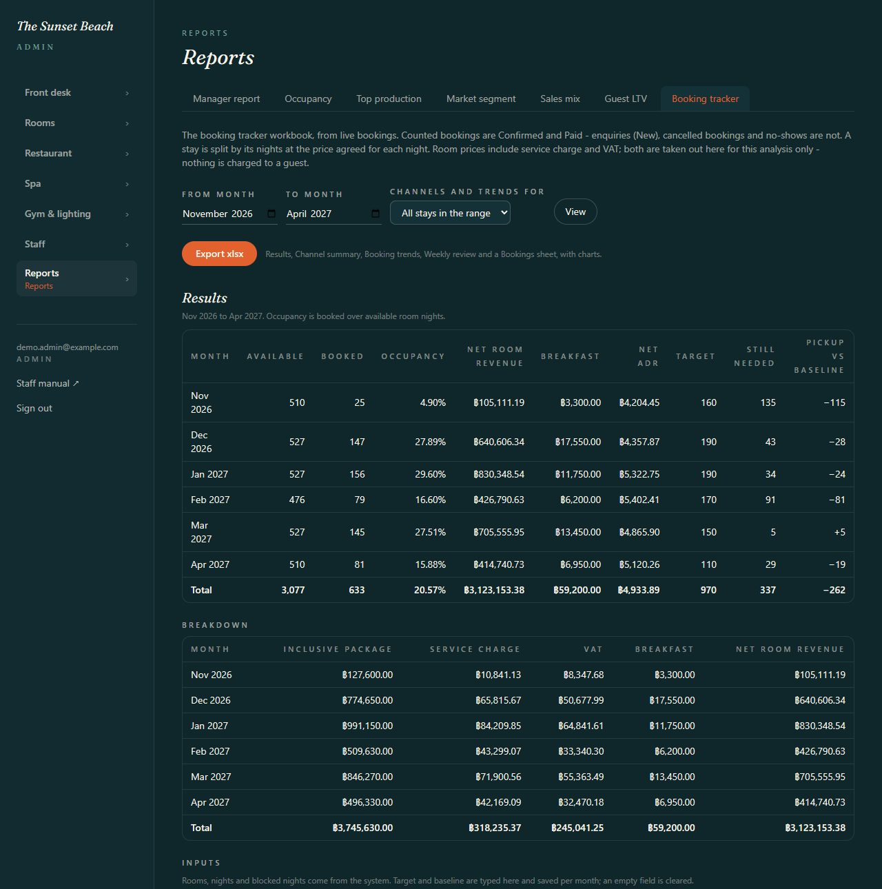

สัปดาห์ที่ 16 พฤศจิกายน 2026
สัปดาห์ที่ 16 พฤศจิกายน 2026
ฝ่ายต้อนรับ
ใหม่
- Tentative / Confirmed แบบฟอร์มการจองใหม่มีสวิตช์สองตัว (เลือก Confirmed ไว้ให้ก่อน) สถานะที่เคยแสดงเป็น NEW ตอนนี้แสดงเป็น Tentative ในรายการการจอง ปฏิทิน หน้าการจอง และประวัติ ฝ่ายต้อนรับ (CASHIER ขึ้นไป) สถานะการจอง
- บันทึกในการจอง รับส่งสนามบิน อาการแพ้ คำขอพิเศษ ช่องไม่บังคับตอนสร้างการจอง การ์ด Notes ในหน้าการจองและแผงปฏิทิน ไอคอนโน้ตในรายการการจองและรายการเช็คอินใน Today ประวัติบอกว่ามีการเปลี่ยนบันทึก แต่ไม่บอกเนื้อหา แขกไม่เห็นบันทึก ฝ่ายต้อนรับ (CASHIER ขึ้นไป) หน้าการจอง
- อาหารเช้าในการจอง จำนวนแขกต่อคืนและอัตรา ฿250 หรือ ฿350 ใช้หักออกจากราคาห้องใน tracker เท่านั้น ไม่มีอะไรถูกเรียกเก็บจากแขก ฝ่ายต้อนรับ (CASHIER ขึ้นไป) หน้าการจอง
- ช่องทางใหม่ Ctrip / Trip.com, Hotelbeds และ Travel agent ในรายงาน Market segment ทั้งสามนับเป็น OTA Booked on ในหน้าการจองของการจองจาก SiteMinder คือวันที่จองของ SiteMinder เอง ฝ่ายต้อนรับ (CASHIER ขึ้นไป) รายงาน, การนำเข้าจาก SiteMinder
- ย้ายแขกไปห้องอื่นเริ่มได้ทุกคืน รวมถึงคืนแรก แขกที่เข้าพักวันนี้เปลี่ยนประเภทห้องได้ การเข้าพักทั้งหมดจะย้ายไป จากคืนหลังจากนั้นจะแบ่งการเข้าพัก คืนที่พักไปแล้วอยู่ห้องเดิม และห้องเดิมของแขกที่เข้าพักอยู่จะถูกทำเครื่องหมายว่าสกปรกทันที ฝ่ายต้อนรับ (CASHIER ขึ้นไป) การย้ายที่เริ่มก่อนวันนี้ต้องเป็นผู้จัดการ หน้าการจอง
- เลือกอัตราราคาเมื่อเปลี่ยนประเภทห้อง ตัวอย่างแสดงยอดรวมปัจจุบัน ยอดรวมใหม่ และส่วนต่างของ Apply new rate (อัปเกรดหรือดาวน์เกรดแบบเสียเงิน) และ Keep original rate (อัปเกรดฟรี หรือการย้ายที่โรงแรมเป็นต้นเหตุ) เฉพาะผู้จัดการ (MANAGER ขึ้นไป) ที่คงราคาเดิมได้ CASHIER ไม่เห็นตัวเลือกนี้ มีเพียงข้อความแจ้งไว้ ประเภทห้องเดียวกันราคาไม่เปลี่ยน
- รายการห้องตอนย้ายทำเครื่องหมายห้องที่ไม่ว่าง ห้องที่ไม่ว่างในคืนที่ย้ายแสดงว่าใช้ไม่ได้พร้อมเหตุผล และไม่แสดงห้องที่แขกพักอยู่ตอนนี้ ผู้ตัดสินสุดท้ายยังคือเซิร์ฟเวอร์ตอนกดยืนยัน
- ลากแถบไปห้องอื่น (วันที่เดิม ประเภทห้องอื่น หรือแขกที่เข้าพักอยู่) จะเปิดหน้าต่าง Relocate เดียวกัน เพื่อยืนยันวันที่และอัตราก่อนมีอะไรเปลี่ยน การจองที่เริ่มก่อนวันแรกที่แสดงมีขอบซ้ายเหลี่ยมและเครื่องหมาย ‹ เมื่อปิดการลากเพราะคอลัมน์แคบ จะมีข้อความเหนือปฏิทินพร้อมปุ่ม Make columns wider ปฏิทิน
- การจอง Room paid ไม่ซ่อนราคาที่สูงขึ้นอีกต่อไป การย้ายแขกไปห้องที่แพงกว่าด้วยอัตราใหม่ การพักนานขึ้น หรือการปรับราคา จะเตือนในตัวอย่าง (Room paid will be reopened: the guest will owe ฿X) การจองกลับเป็น Confirmed และส่วนต่างแสดงเป็นยอดค้างชำระ เมื่อบันทึกการชำระ ระบบจะตั้งเป็นชำระค่าห้องแล้วเองอีกครั้ง ถ้าราคาลดลง ห้องยังคงชำระแล้วและส่วนต่างเป็นเครดิต สิ่งที่ชำระไปแล้วไม่ถูกเรียกเก็บซ้ำ และบัญชีตามไปด้วย (กลับรายการการรับรู้รายได้ค่าห้อง และบันทึกใหม่เมื่อชำระอีกครั้ง) ฝ่ายต้อนรับ (CASHIER ขึ้นไป) หน้าการจอง
- จำนวนเงินอ่านเหมือนกันทุกที่ บาทเต็มไม่มีทศนิยม (฿8,000) ถ้ามีสตางค์จะแสดงสองหลักเสมอ (฿8,000.50) ราคาที่พิมพ์เอง เงินสดที่รับ อัตราในตาราง Rates และเป้าหมายของ tracker รับ 8000,50 เช่นเดียวกับ 8000.50 ทุกบทบาท
แก้ไขแล้ว
- แคชเชียร์เลือกห้องเมื่อย้ายแขกได้แล้ว และแขกที่เข้าพักอยู่ต้องระบุห้อง (เดิมอาจถูกส่งไป "no room assigned")
- ประวัติในหน้าการจองอ่านเป็น Confirmed, Tentative, Room paid แทนค่าดิบ รายการใหม่เขียนวันที่เป็น 19 Nov 2026
- การวางการจองบนคืนว่างของห้องอื่นคือการย้ายไปที่นั่น ไม่ว่าเมาส์จะผ่านแถบใดมา การวางระหว่างห้อง หรือการสลับระหว่างประเภทห้องที่ต่างกัน จะมีข้อความบอกในหน้า คำแนะนำเหนือปฏิทินบอกให้ดับเบิลคลิกการจอง (แตะบนหน้าจอสัมผัส) เพื่อเปิด
- ยอดที่จะเก็บในหน้าการจองตามยอดคงเหลือหลังย้ายหรือเปลี่ยนราคา (สิ่งที่พิมพ์ไว้แล้วจะอยู่ต่อ)
- การจองที่ยกเลิกไม่มีบล็อก Stay: Expected และปุ่ม Change ของวันที่
- ข้อความเรื่องจ่ายเกินไม่บอกว่าการเข้าพักสั้นลง แต่บอกว่าราคาลดลงหลังชำระ
- แขกที่เช็คอินหลังวันออกเห็นยอดค้างที่ถูกต้องทันที
- ชื่อหน้าต่างย้ายห้องอยู่ในกรอบ โลโก้ในเมนูเปิดหน้าหลักของตนเอง
พนักงาน
ใหม่
- ตารางงาน แถวของวันที่และคอลัมน์พนักงานอยู่กับที่ขณะเลื่อนตาราง (และตาราง Attendance) ผู้จัดการ (MANAGER ขึ้นไป) ตารางงาน
แก้ไขแล้ว
- Users: แถวที่แก้ไขอยู่ที่เดิม ผู้ใช้ใหม่เป็น Waiter โดยปริยาย และแสดงหรือซ่อนรหัสผ่านชั่วคราวได้
- สวิตช์ใน Roster สำหรับพนักงานที่ไม่มีกะบอกว่า hide them หรือ show them
- คอลัมน์ของ Attendance กว้างเท่ากันทุกวัน
รายงาน
ใหม่

- แท็บ Booking tracker: Results รายเดือนเทียบกับเป้าหมายและ baseline, Channel summary พร้อมกราฟ, Booking trends (ช่วงเวลาจองล่วงหน้าและจังหวะการจอง 12 สัปดาห์) และ Weekly review ที่ถ่าย snapshot อัตโนมัติทุกวันศุกร์เวลา 23:55 ปุ่ม Export xlsx ดาวน์โหลดเป็นไฟล์ Excel ผู้จัดการและผู้ดูแลระบบ (MANAGER ขึ้นไป) อ่านวิธีคำนวณ
- แท็บ Future bookings: ใครจะมาในช่วงวันที่ แยกตามสถานะ (Tentative, Confirmed, Room paid) พร้อมจำนวน คืน ราคาห้อง ยอดค้างชำระ และบันทึก Export CSV ดาวน์โหลดได้ ผู้จัดการ (MANAGER ขึ้นไป) Future bookings
- Tax rates (Reports → Settings): เปอร์เซ็นต์ค่าบริการและ VAT ที่ tracker หักออกจากราคาห้อง ผู้ดูแลระบบ (ADMIN) Tax rates
แก้ไขแล้ว
- CSV ของ Future bookings ใช้ชื่อช่องทางเหมือนบนหน้าจอ (Phone ไม่ใช่ PHONE)
ไม่มีอะไรเปลี่ยนสำหรับแขก
ค่าบริการและ VAT ใน tracker เป็นการหักเพื่อการวิเคราะห์เท่านั้น บิล โฟลิโอ ใบเสร็จ และยอด POS ของแขกไม่เปลี่ยน บันทึกไม่ถูกส่งให้แขก และการจองที่พนักงานบันทึกเป็น Tentative ไม่หมดอายุ